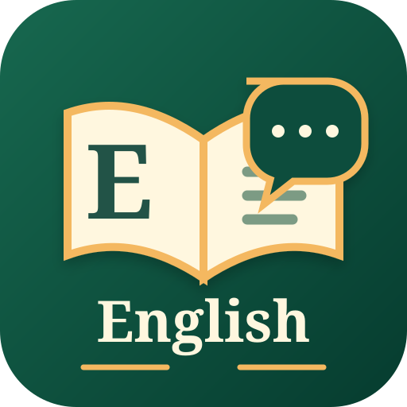

Easy EnglishTu espacio para aprender inglés a tu ritmo. Guardaremos las lecturas y ejercicios en este dispositivo, sin cuenta ni contraseña.
🔒 Tus datos permanecen en este dispositivo.
Aprende a tu ritmo con lecciones cortas, práctica guiada y todo el contenido disponible sin conexión.
Avanza a tu ritmo.
Completa una lección para desbloquear la siguiente.
Busca, lee y marca lo estudiado. El progreso se guarda en este dispositivo.
Este perfil se guarda solo en tu teléfono. No requiere registro ni envía tus datos a ningún servidor.